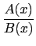

suivant: Développement limité : taylor
monter: Développements limités et asymptotiques
précédent: Développements limités et asymptotiques
Table des matières
Index
Division selon les puissances croissantes : divpc
divpc a trois arguments : deux polynômes
A(x), B(x)
(avec
B(0)  0) et un entier n.
0) et un entier n.
divpc renvoie le quotient Q(x) de la division de A(x) par B(x)
selon les puissances croissantes avec degree(Q)  n ou Q = 0.
n ou Q = 0.
Q(x) est donc le développement limité, d'ordre n, de
 au voisinage de x = 0.
On tape :
divpc(1+x^2+x^3,1+x^2,5)
On obtient :
-x^5+x^3+1
Attention!!! cette commande ne marche pas si les polynômes sont écrits
avec la liste de leurs coefficients.
Documentation de giac écrite par Renée De Graeve